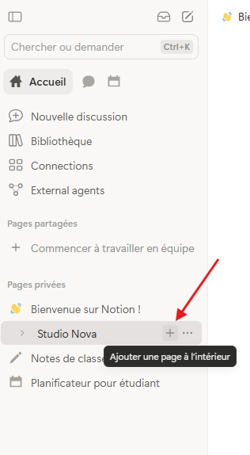
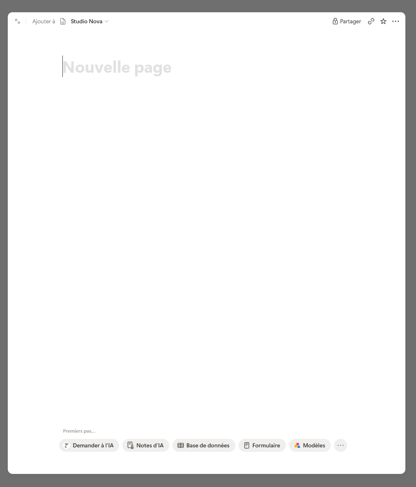
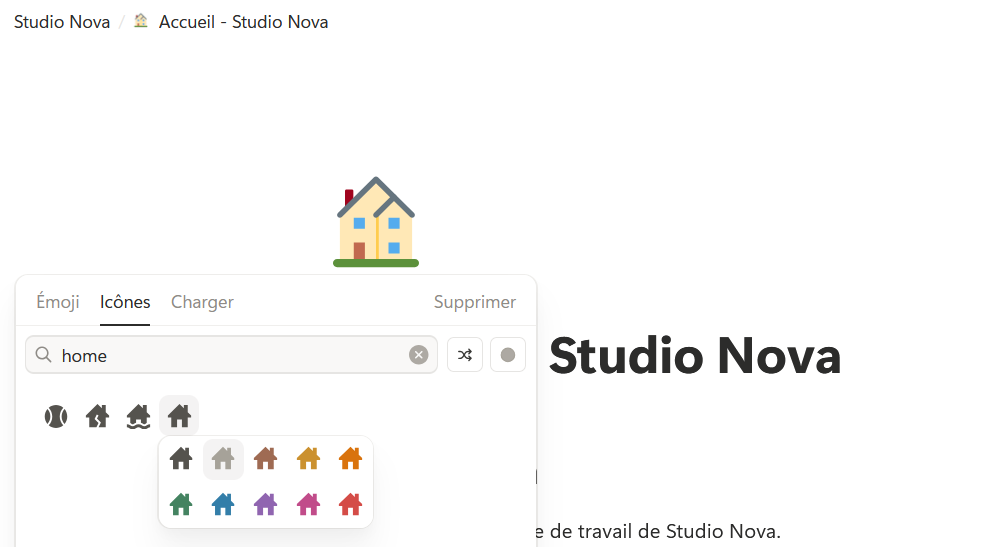

Créer et nommer une page
Étape 1 : comprendre
Créer une page prend deux secondes. La nommer correctement prend deux secondes de plus, et c'est ce qui fait gagner du temps à toute l'équipe ensuite. Une page mal nommée est une page que personne ne retrouve.
Il existe plusieurs façons de créer une page. Les deux plus utiles :
- Le « + » à côté d'une section de la barre latérale, comme « Pages privées ». La page est créée directement dans cette section. Tu l'as fait au module 1.
- Le « + » à côté d'une page de la barre latérale. Il apparaît quand tu survoles la page. La nouvelle page est alors rangée à l'intérieur de celle-ci.
Une nouvelle page s'appelle d'abord « Nouvelle page », en gris. Ce n'est pas un vrai titre : c'est un emplacement vide. Tant que tu ne tapes rien, la page apparaît sans nom dans la barre latérale.
Un bon titre répond à la question : « qu'est-ce que je vais trouver dans cette page ? ». Il est court, précis, et compréhensible par quelqu'un d'autre que toi.
L'icône est un petit symbole affiché devant le titre. Elle n'est pas obligatoire, mais elle aide à repérer une page d'un coup d'œil dans la barre latérale.

Un bon titre dit ce que contient la page, pour toi et pour tes collègues.
Attention : si tu laisses « Nouvelle page » en gris sans rien taper, ta page n'a pas de titre. Elle apparaît comme « Sans titre » dans la barre latérale, et devient très difficile à retrouver.
Créer la page « Accueil — Studio Nova »
- Dans la barre latérale, survole ta page « Studio Nova ». Un petit « + » apparaît à sa droite.
- Clique sur ce « + ». Une nouvelle page s'ouvre, rangée à l'intérieur de « Studio Nova ».

- Clique sur « Nouvelle page » et tape le titre : « Accueil — Studio Nova ».
- Survole la zone juste au-dessus du titre et clique sur « Ajouter une icône ».
- Notion place une icône au hasard. Clique dessus pour ouvrir la liste des icônes, tape « home » dans la recherche et choisis la maison.

- Dans la barre latérale, clique sur la petite flèche devant « Studio Nova » : ta page « Accueil — Studio Nova » apparaît en dessous, avec sa maison.
Astuce : pour renommer une page plus tard, clique simplement sur son titre et modifie-le. Le nouveau nom s'affiche partout, y compris dans la barre latérale et dans les liens qui mènent à cette page.
Exercice · dans Notion
La page d'accueil de Studio Nova
- Crée la page « Accueil — Studio Nova » à l'intérieur de ta page « Studio Nova ».
- Ajoute-lui l'icône de maison.
- Vérifie dans la barre latérale qu'elle est bien rangée sous « Studio Nova ».
Résultat attendu : dans la barre latérale, quand tu déplies « Studio Nova », tu vois « Accueil — Studio Nova » avec une icône de maison. La page est vide pour l'instant.
Étape 3 : vérifier
Objectif de la leçon
Tu sais maintenant créer une page, lui donner un titre clair et lui ajouter une icône.
Choisis une réponse avant de valider.
« Identité Luna — Pistes de logo » dit à la fois le projet et le contenu. « Idées » est trop vague : quelles idées, pour quel projet ? Et « Nouvelle page » n'est pas un titre, seulement l'emplacement vide.
Choisis une réponse avant de valider.
Le « + » qui apparaît à côté d'une page crée une page à l'intérieur de celle-ci. C'est comme ça que tu rangeras toutes les pages de Studio Nova au même endroit.